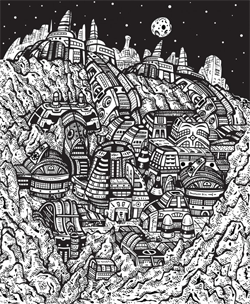
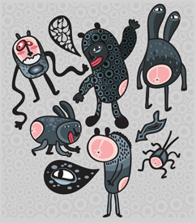
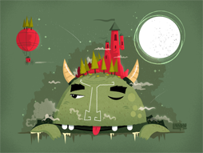
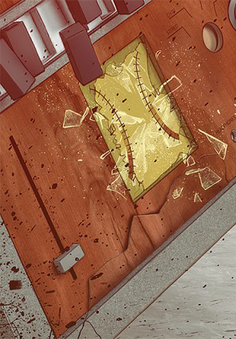

Portfolio
Duis mollis est non commodo luctus








About us
As a result of high radiocaesium bioaccumulation factors, fish have remained contaminated in some areas, despite low radiocaesium levels in water.

Adam Jensen
As a result of high radiocaesium bioaccumulation factors, fish have remained contaminated in some areas, despite low radiocaesium levels in water.
Adam Jensen
As a result of high radiocaesium bioaccumulation factors, fish have remained contaminated in some areas, despite low radiocaesium levels in water.
Adam Jensen fjjfkkkf fgggggggggggggggggggg gggg
As a result of high radiocaesium bioaccumulation factors, fish have remained contaminated in some areas, despite low radiocaesium levels in water.